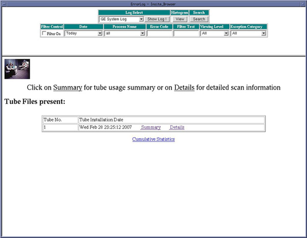
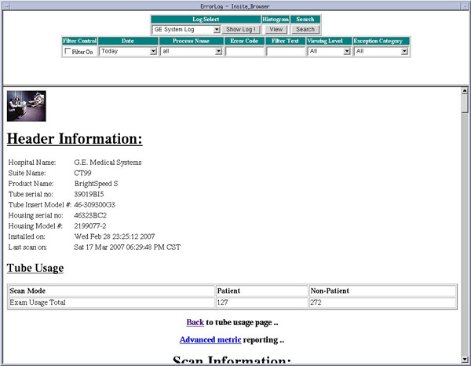
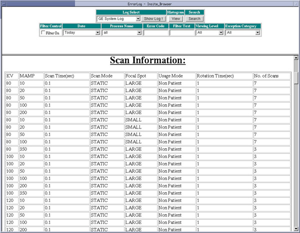
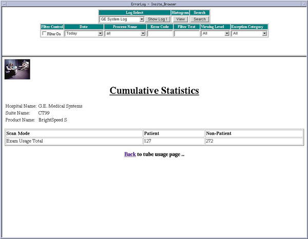

Proprietary to General Electric
Direction 5181166-800, Rev# 7
BrightSpeed Select Service Methods Adv
Proprietary to General Electric |
| Last Revised on: | March, 2007 |
The System Browser is used to display information about the currently installed tube as well as previously installed tubes. The Tube Usage viewer provides three different levels of information viewing for Tube Usage: Summary, Details, and Cumulative.
| NOTE: | For Tube Warranty purposes ‘Total Patient Exams’ is the correct number to report upon tube unit failure. |
Illustration 1 shows an example of the Tube Usage Screen. This screen allows you to select Summary, Details or Cumulative Statistics. If previous tubes had been installed on this example system, the other tubes would be listed in the Option window by descending install date.
Illustration 1: Tube Usage Screen

The Tube Usage Details information identifies the selected Tube Unit and Site Information plus details on the types and number of scans taken on that tube unit. Refer to Illustration 2 and Illustration 3 for examples of the display.
Illustration 2: Tube Usage Detail Example

Illustration 3: Tube Usage Details Screen showing partial Scan Information

The Tube Usage Cumulative Information displays the totaled tube usage information for all tubes that have been installed on the system. Refer to Illustration 4 for an example of the display.
Illustration 4: Tube Usage Cumulative Example.
